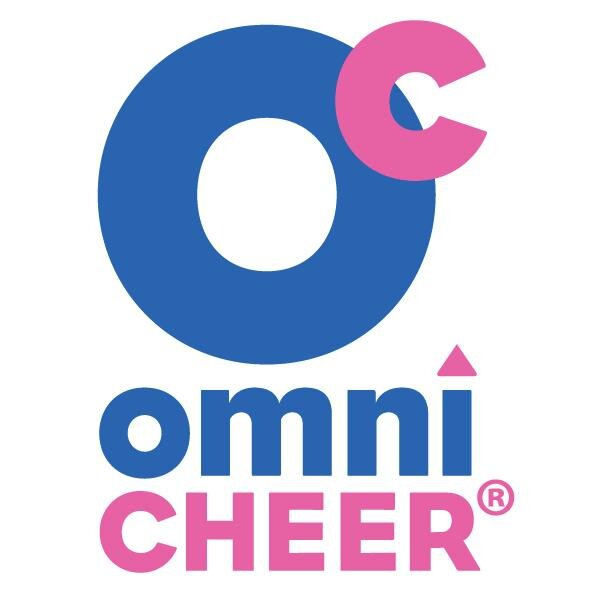
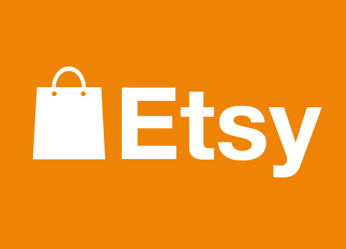
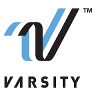

Mrs. A's Custom Cheer and Fashion Bows

| Competitor | Price Point | Quality | Brief Comparison |
|---|---|---|---|
|  | Low ($4-$15) | Good | Omni has both plain and semi-embellished bows, but they do not have a large selection and do not make custom bows |
|  | Average ($6-$20) | Good | Etsy has a wide selection of vendors who make hand-made, custom bows with any level of embellishment. Some charge shipping, some do not. |
|  | High ($8-$30) | Good | Varisty has a limited selection of both plain and semi-embellished bows. Their prices are higher than average and they charge almost as much for shipping as they do for each bow. They do not customize bows, and you must order a minimum of 5 at a time. |
Here at Mrs. A's, we believe that consumers will purchase from us rather than (or in addition to) our competitors because we are a local, non-profit business. Our target market has been raised with a mindset that buying local is the best, most socially conscious thing to do when one must buy things, so we appeal to that attitude where larger companies like Varsity and OmniCheer do not. We also offer low to average pricing as well as custom service; none of our identified competitiors can boast both. Once a clientele has been established, we will also be able to keep costs low by relying on word-of-mouth recommendations and social media presences for advertising. Since we are a non-profit and all proceeds go to a local charity, we are able to offer the best possible service without factoring in the profit margins or filling the pockets of shareholders. Because this business is a cherished hobby rather than a means of earning a living wage, our customers know that they will get a product that both creator and wearer can be proud of, and not just something slapped together as cheaply as possible in order to drive profits. Bottom line: I like making bows. I want to keep making bows. In order to keep making bows, I have to produce something that meets all the needs of my clients. I do just that by creating high-quality, affordable bows. Everybody wins!